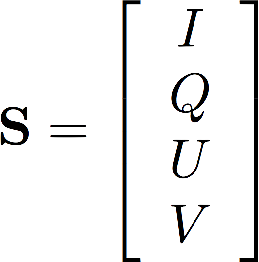
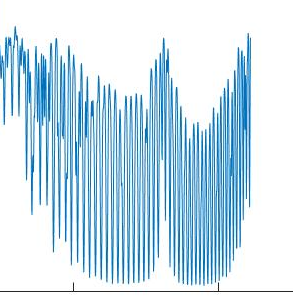
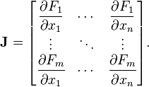
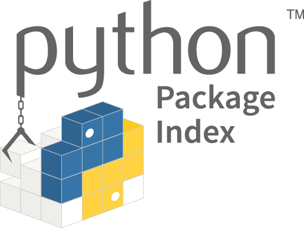

Unified Linearized Vector Radiative Transfer Model:
aiming to a testbed for remote sensing of atmosphere, land, and ocean.
Latest version: 2.1.20 on 2020.05.04
What Is UNL-VRTM?
UNL-VRTM was specifically designed for the simulation of atmospheric remote sensing observations and for the inversion of aerosol, gas, cloud, and/or surface properties from these observations. It is applied by research groups around the world to a wide range of Earth remote sensing problems. UNL-VRTM comprises VLIDORT for radiative transfer, a linearized Mie and a linearized T-Matrix code for aerosol single scattering, a Rayleigh scattering module, and line-by-line (LBL) gas absorption calculation with HITRAN database:
UNL-VRTM Features

Vector RTM for simulation of light intensity and polarization |

Accurate UV-to-IR (0.2 - 40 micron) hyperspectral RTM |

Online analytical Jacobian of Stokes to particle, gas, and surface properties |
Information content analysis for future satellite sensors |
Flexible configuration for aerosol/cloud, gas, atmosphere and surface modules |

Complementary Python utility package, pyunlvrtm |
Open source, open science |